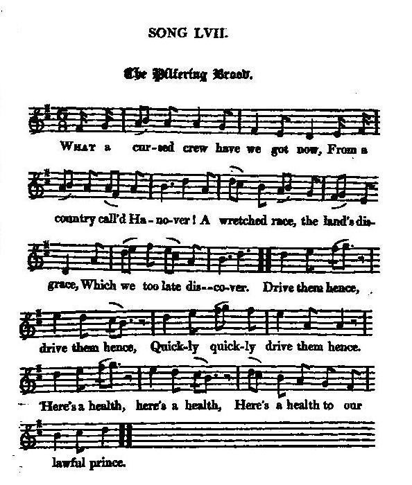

The Pilfering Brood
Les chapardeurs
George I.'s arrival in England (1714)
L'arrivée de Georges I. en Angleterre (1714)
Tune - Mélodie
"The Pilfering Brood"
from Hogg's "Jacobite Reliques" , part I, N°57
Sequenced by Christian Souchon


|
THE PILFERING BROOD
1. What a cursed crew have we got now, From a country call'd Hanover! A wretched race, the land's disgrace, Which we too late discover. Drive them hence, drive them hence, Quickly, quickly drive them hence. Here's a health, here's a health, Here's a health to our lawful prince. 2. -Had you seen their public entry, When first they grac'd the city. Each did appear in his best gear, Like pilfering poor banditti. Drive them hence, &c. 3. Now they have gotten all our gear, And our estates are carving; If they stay here another year, We'll have no shift but starving. Drive them hence, &c. 4. The only way relief to bring, And save both church and steeple, Is to bring in our lawful king, The father of his people. Let him come, let him come, Quickly, quickly let him come. Here's his health, here's his health, Here's his health and safe return. 5. Ne'er can another fill his place, O'er rights divine and civil; But for the horny cuckold's face, Let's drive him to the devil. Drive him hence, &c. Source: "The Jacobite Relics of Scotland, being the Songs, Airs and Legends of the Adherents to the House of Stuart" collected by James Hogg, published in Edinburgh by William Blackwood in 1819. |
LES CHAPARDEURS
1. Quelle bande maudite avons-nous donc Reçue d'un pays nommé Hanovre? Race d'avortons, fléau de la nation! Avant que nous soyons tous pauvres, Qu'on les chasse! Qu'on les chasse! Les garder est un crime! Que l'on fasse, de la place Au monarque légitime! 2. Lors de leur entrée solennelle ici Dont ils tinrent à gratifier Londres, Tous ils avaient mis leurs plus seyants habits: On eût dit bandits en maraude: Qu'on les chasse... 3. Désormais tout notre bien est à eux, Et nos terres ils se les partagent. S'ils restent, ces gueux, un an ou deux, Seuls survivront les nécrophages! Qu'on les chasse... 4. Il n'est qu'un seul remède à notre mal Dont sont atteints le peuple et l'église: Que se réinstallent l'ordre normal, Le roi selon l'antique guise. Qu'il revienne! Qu'il revienne! Qu'il revienne au plus vite! A la sienne! A la sienne A boire je vous invite. 5. Nul autre à sa place ne ne doit siéger: Ni Dieu, ni le droit ne l'autorisent. Quant au coucou dont le visage est orné De deux cornes, qu'il déguerpisse Qu'on le chasse... (Trad. Christian Souchon(c)2009) |
|
"This is a song of 1714, and relates to the arrival of George I. in England. It is an intemperate song, having all the bitterness of
the Wee wee German Lairdie
, without its genuine merits.
" Had you seen their public entry, When first they grac'd the city, Each did appear, in his best gear, Like pilfering poor banditti." [Follows] a very long poem of the same year that describes this ' public entry' with [a great deal of] humour..." James Hogg in "Jacobite Relics", 1819 |
Voici un chant de 1714 qui a trait à l'arrivée de Georges I. en Angleterre. C'est un texte excessif qui a toute la violence du
"Petit Lord Teuton"
sans en avoir les indéniables qualités.
Lors de leur entrée solennelle ici Dont ils tinrent à gratifier Londres, Tous ils avaient mis leurs plus seyants habits: On eut dit bandits en maraude: [Suit] un très long poème datant de la même année qui décrit cette 'entrée solennelle' avec [une bonne dose d']humour..." James Hogg dans "Jacobite Relics", 1819 |
|
|
|